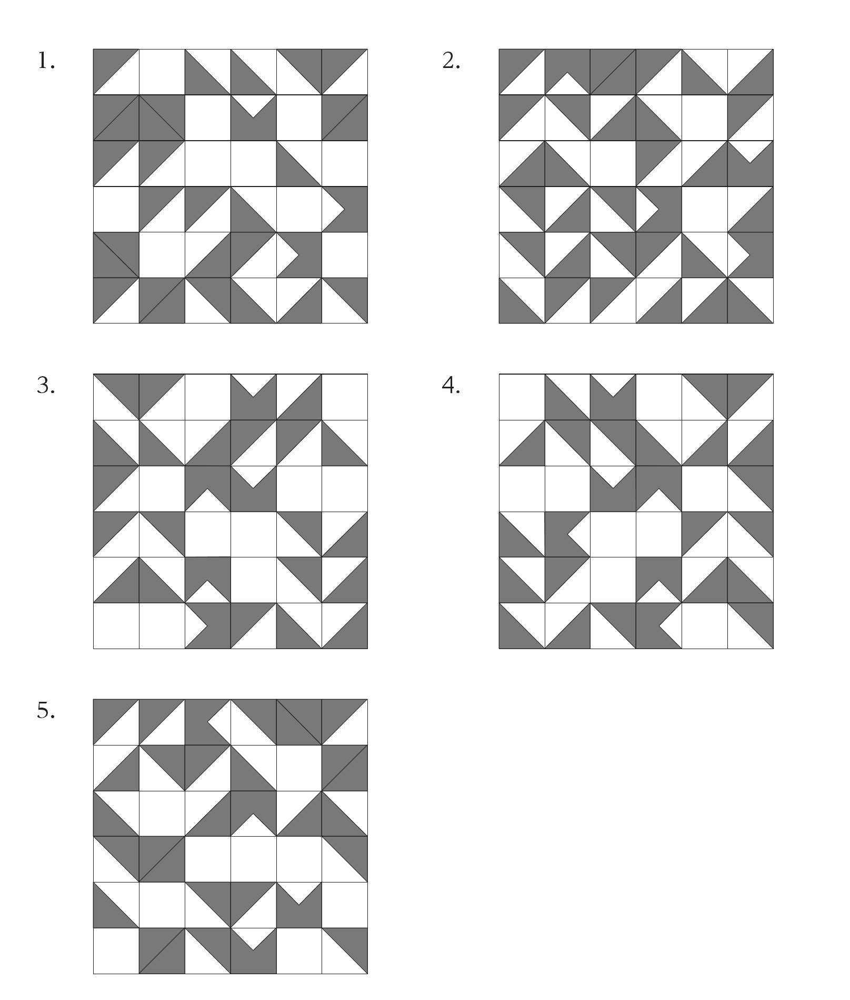
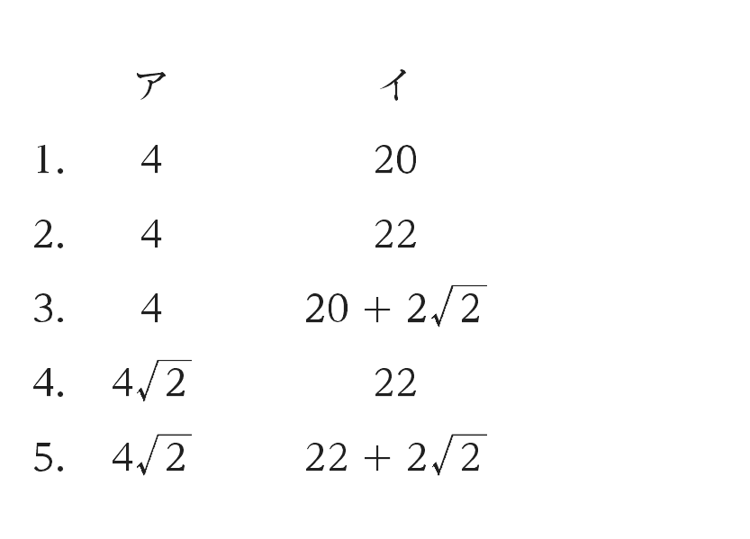

2023年度 基礎能力試験Ⅰ部 問題
先に自力で解いてから、必要な問題だけ解説へ進みます。正答番号・解法はこのページには表示していません。人事院公式の原本PDFを開く ↗
注意事項
- 問題は24題（33ページ）で、解答時間は2時間です。
- この問題集は、本試験種目（基礎能力試験I部及びII部）終了後に持ち帰りができます。
- 基礎能力試験II部の途中で退室する場合は、退室時の問題集の持ち帰りはできません。退室時には、基礎能力I及び基礎能力IIの問題集を回収し、希望する方には後ほど渡します。別途試験官の指示に従ってください。なお、試験時間中に、この問題集を切り取ったり、転記したりしないでください。
- 下欄に受験番号等を記入してください。
第1次試験地／試験の区分：教養／受験番号／氏名
指示があるまで中を開いてはいけません。
問1
次の文の内容と合致するものとして最も妥当なのはどれか。
著作権の関係のため、掲載できません。
- 触覚性は、日本的感性の基本的な特性であり、美しい空間の広がりのなかに入ってその空間に包まれるという、桜の花の観賞方式にみることができる。
- 触覚的な感性と視覚的な認識は、直ちに、《世界―われ》の基軸のうえでの変化を引き起こす基軸変数である「動き」に従って二方向に分化し、多彩な感性的現象を展開する。
- より世界の側に位置する世界型の本領は、桜の花に包まれ、こころに焼きついた残像に注目するときの意識であり、また、その意識は、わたしを包む空間の広がりへと拡散する。
- 中世になって、西洋的な世界認識が伝来すると一種の遠近法的構図ができ、日本的感性に基づく日本の風景経験の原型である「けしき」は、深層に埋もれた残像として忘却されていった。
- われ型の基本特性は記憶と相関しており、身体的な記憶への反響としての感性においては、聴覚による倍音や稲妻よりも、嗅覚による香の方が、記憶を呼びさましやすいとされている。
問2
次の文の内容と合致するものとして最も妥当なのはどれか。
著作権の関係のため、掲載できません。
- 現実主義とは、国際政治の本質を見極め、国家間の対立が生じた際には、国際法や国際連合の権威に依拠することなく、各国の最小限の武力行使で紛争を解決しようとするものである。
- 国家間の対立はその解決に困難を伴うため、現実主義においては、目の前の権力闘争への対処に集中する傾向がみられるが、そうした選択をすることによって、対立の原因の解決を諦めたわけではない。
- 国際法と国際連合は、悪循環をおこす行為を抑止する働きを担っているため、現実主義において、各国は、最小限の道徳的要請に応えれば、それぞれの理念と正義を追求することができる。
- 現実主義における旧状復帰の原則は、国家間の対立の根本的な原因に目を向け、対立の原因の解決を国際法と国際連合に委ねるものであるが、そうした選択は、悪循環をおこさないとは限らない。
- 現在の政治家は、権力闘争に対処することの困難さを認識しているがゆえに、自国の国家目的を追求する上では、現実主義においても、力と利益ではなく理念と正義を選択することが求められている。
問3
次の文の □ に当てはまるものとして最も妥当なのはどれか。
著作権の関係のため、掲載できません。
- 個々の象徴を関連づけてシステムをつくっている
- 象徴化した世界以外の要素や性質も取り込んでいる
- 膨大な情報から具象的な概念を抜き出している
- 新たな確たる象徴能力を発達させている
- 抽象化したものを具象的なものにシンボル化している
問4
次の文の内容と合致するものとして最も妥当なのはどれか。
著作権の関係のため、掲載できません。
- 夢は、19世紀までは神の不吉なお告げとみなされ、口に出して他人に話すことは慣習的に避けられてきた一方、絵画などの題材として芸術家たちを魅了してきた。
- 19世紀に創始された精神分析では、鮮明な色の付いた夢を何週間も見続けることは病気の症状であるとされ、様々な治療方法が模索された。
- 心理療法士のPerryが、自分の見た夢を送ってくれるよう、Twitter（ツイッター）上でフォロワーに呼び掛けたところ、多くの返信があった。
- DürerによるDream Visionは、芸術家自身の見た夢を描いた絵であり、新しく開発された絵の具による鮮明な色彩と、鑑賞者を感動で震えさせるほどの美しい風景の描写で知られている。
- 心理療法士のPerryは、夢の中の事象がどのような感情を表しているか調べた結果、水に関する夢は恐怖を表していることを解明し、現在は、空に関する夢の解明に取り組んでいる。
問5
次の文の内容と合致するものとして最も妥当なのはどれか。
著作権の関係のため、掲載できません。
- 投資家は、地球温暖化を食い止めるための取組を遅らせてきた政治家の責任を追及し、脱炭素社会の実現に向けた具体的政策を求めた。
- 石油・ガス産業は、COVID-19 の世界的流行以前には各種産業の中で最も高い業績を維持していたが、COVID-19 の世界的流行後は、業績の悪化とともに株価指数が大きく下落した。
- 世界的な気温上昇を抑えるためには、クリーンエネルギーへの莫大な投資や、石油の生産量の大幅な削減などが必要であり、結果として、石油の需要が減少する可能性も指摘されている。
- IEA が全ての国連加盟国に対して、世界的な気温上昇を制限する目標の達成を求めたことを受けて、各国の民間企業は、新たな化石燃料の生産施設への投資を中止することを決定した。
- 石油とガスがエネルギー市場を独占する時代を終わらせるためには、利益中心の自由市場経済を段階的に縮小させるとともに、世界中の投資家による新たなエネルギー市場への投資が求められている。
問6
次の文の内容と合致するものとして最も妥当なのはどれか。
著作権の関係のため、掲載できません。
著作権の関係のため、掲載できません。
- カニなどの甲殻類には有用な化学物質が含まれており、それらは、飛行機の耐火材の原料や機能性表示食品の成分としてだけでなく、バッテリーの溶液の材料としても、最近注目されている。
- 亜鉛は、リチウムに比べて、地球上に多く存在する金属であるが、キトサンと結合しやすいことが判明したため、電気自動車の需要が高まるにつれて世界的な獲得競争が始まった。
- 小型の甲殻類を材料にした実験では、バッテリーのエネルギー効率が9割を超えていたが、大量かつ安価に入手できる大型の甲殻類を材料にして再度実験したところ、同等の効率水準に達しなかった。
- Hu所長とNewton教授は、別々に新たなバッテリーの研究開発を行っているが、リサイクルの観点でみると、材料としてエビに着目したHu所長の方が、研究は先行している。
- キトサンと亜鉛を利用したバッテリーは、環境に優しく持続可能であると期待されているが、まだ研究段階であり、商品化に向けては多くの課題がある。
問7
次の文の内容と合致するものとして最も妥当なのはどれか。
著作権の関係のため、掲載できません。
著作権の関係のため、掲載できません。
- マヤ文化の最初の定住者は、南米からやって来て、既にそこに居住し狩猟や採集生活を行っていた人々の社会や文化を滅ぼしたと考えられている。
- nixtamalizationは、トウモロコシの種子をアルカリ水で処理し、柔らかくすることにより収穫量を増やす方法であり、他の野菜や豆の栽培に際しても、それらの種子に対してnixtamalizationが用いられた。
- マヤ文化で使用された三つの暦は、いずれの始期もそれらが発明された紀元前3114年8月とされ、暦の一つである長期暦の終期は、当時のマヤの人々が世界の終末を迎えると考えた2012年12月に設定された。
- Classic periodのマヤ文明は一つの社会を形成していたが、都市国家や地域の統治者たちは、お互いに平和的に共存するか、支配をめぐって戦うかの間で揺れ動いていた。
- マヤの神々の伝道師であるHun Hunahpuは、全てのものに神が宿ることや、神々は人間を最初は泥から、次に木から、次いでトウモロコシから作ったことを人々に説いた。
問8
次の□と□の間にア〜エを並べ替えて続けると意味の通った文章になるが、その順序として最も妥当なのはどれか。
著作権の関係のため、掲載できません。
- ア→ウ→イ→エ
- イ→ウ→ア→エ
- イ→エ→ア→ウ
- エ→ア→イ→ウ
- エ→ウ→イ→ア
問9
議案Xの検討を行う会議をリモートで行うこととなり、参加者にパソコンを貸与した。 会議において参加者は、質問への回答が「はい」のときはAボタンを、回答が「いいえ」のときはBボタンを押すことになっていたが、一部の参加者は、誤って逆の回答方法を伝達されていたため、回答が「はい」のときにBボタンを、回答が「いいえ」のときにAボタンを押すこととなってしまった。 この状況で、参加者全員に対して様々な質問を行ったとき、質問に対する回答結果が論理的に正しいのはどれか。
ただし、参加者は全員、議案Xに対して賛成又は反対のいずれかの立場であり、ボタンの押し間違いはなかったものとする。また、通常の回答方法を伝達された参加者と、逆の回答方法を伝達された参加者は、いずれの参加者についても、議案X に賛成する者と反対する者が含まれていた。
- 「あなたは議案Xに賛成しますか」と質問すると、議案Xに賛成する参加者は、全員Aボタンを押した。
- 「あなたは議案Xに賛成しますか」という質問に対して、Aボタンを押して回答しますか」と質問すると、議案X に賛成する参加者は、全員Aボタンを押した。
- 「『「あなたは議案Xに賛成しますか」という質問に対して、「はい」と回答しますか」と質問すると、議案Xに賛成する参加者は、全員Aボタンを押した。
- 「あなたは議案Xに賛成しますか」という質問に対して、「いいえ」と回答しますか」と質問した結果、Aボタンを押した参加者は、全員議案Xに賛成していた。
- 「あなたは、質問への回答が「はい」のときにAボタンを押す者であり、かつ、議案X に賛成しますか」と質問した結果、Aボタンを押した参加者は、全員議案Xに賛成していた。
問10
A〜Eの5人は、全員、帽子と手袋を着用して、あるパーティー会場に1人ずつ順番に入場した。この5人について次のことが分かっているとき、確実にいえるのはどれか。ただし、この5人が着用していた帽子と手袋はどちらも単色であった。また、この5人以外の人物については考えないものとする。
- 最初に会場に入場したのは青色の手袋を着用したAで、4番目に入場したのは黄色の帽子と赤色の手袋を着用した者だった。
- 帽子と手袋の色が同じ者が入場し、その直後にBが入場した。
- Cよりも後に入場した者の中に、黒色の帽子と灰色の手袋を着用した者がいた。
- Dの帽子の色は赤色であったが、手袋の色は赤色ではなかった。
- Bと帽子の色が同じ者は1人のみおり、Eと手袋の色が同じ者は2人のみいた。
- Aと帽子の色が同じ者と、Aと手袋の色が同じ者が、それぞれ1人のみいた。
- Bは、2番目に入場し、帽子の色は黄色であった。
- Cは、3番目に入場し、手袋の色は青色であった。
- Dの手袋の色は灰色で、Dの直後にCが入場した。
- Eの帽子の色は黒色で、Eの直後にBが入場した。
問11
○どうしを直線で結んだ図I、図II、図IIIの三つの図形がある。これらの図形はいずれも、1本の直線で結ばれた○どうしを異なる色で塗るようにすると、全ての○は2色（例えば、赤色と青色）で塗り分けることができる。いま、図I、II、IIIの三つの図形から二つ又は三つの図形を選び、○どうしを直線で結んで一つの新たな図形とすることを考え、ここではA〜Hの○の中から、○どうしを結ぶ2本の直線（直線①、直線②）を引いた。この2本の直線を引くことで作られた新たな図形は、全ての○を2色で塗り分けられなくなり、最低でも3色（例えば、赤色と青色と黄色）が必要になった。この2本の直線の組合せとして妥当なのは次のうちではどれか。

- AC BE
- AD DF
- AG BH
- BE DF
- DG EH
問12
図Iのように、1〜36の数字が書かれた正方形の札が並べられており、札どうしの隙間であるA〜EとI〜Vには仕切りを挿入することができる。これらの札について次の操作を繰り返す。
操作
- A〜EとI〜Vからそれぞれ一つずつ選んで仕切りを挿入する。
- このとき、札は四つの部分に分けられるが、それぞれの部分について、札の並びを180度回転させる（例えば、BとIIIに仕切りを挿入して札の並びを180度回転させると、図IIのようになる。）。
- 挿入した仕切りを取り外す。
いま、挿入する仕切りの位置を、BとIII、DとIV、CとI、EとII、DとV、CとIVの順で変えながら上の操作を6回繰り返した。2回目の操作後は、図IIIのようになり、6回目の操作後は、図IVのように一部の札のみ書かれた数字が分かっている。図IVのア、イ、ウの札に書かれている数字の合計はいくつか。

- 30
- 33
- 36
- 39
- 42
問13
図は、碁盤の目状に等間隔に並んだ道路を示しており、線が交わる部分は交差点を示し、㋐〜㋕は当該交差点の名称を示している。AとBの2人は、それぞれのスタート地点から同時に出発し、ある携帯ナビゲーションシステムに従いながら道路上を同じ速度で歩き、ゴールを目指した。このシステムには、利用者の現在地を地図上に示す機能はなく、交差点に来たときに、「東か、西か、南か、北か」を検索すると、その答えの方角のみが表示される。また、このシステムは、原則、ゴール地点への最短ルートとなる方角を表示するが、まれに、最短ルートとならない方角を表示することもある。さらに、このシステムは、最短ルートとなる方角が複数ある場合にはそのうちの一つをランダムで表示する。次のことが分かっているとき、確実にいえるのはどれか。ただし、AとBは、交差点に到着した際には必ず検索を行うものとする。

- AとBは、㋔で出会った。㋔では、それぞれのナビゲーションシステムが同じ方角を表示したが、その次の交差点では異なる方角を表示した。その後、ゴールに到着するまでAとBが出会うことはなかった。
- AとBは、同時にゴールに到着した。ゴールに到着するまで、それぞれのナビゲーションシステムは共に、2回のみ最短ルートとならない方角を表示した。また、AとBは、自身が一度通った道路を再度通ることはなかった。
- Bは、ゴールに到着するまでに2回のみ交差点を曲がった。
- Aは、㋐を通った。
- Aは、㋑を通った。
- Aは、㋒を通った。
- Bは、㋔を通った。
- Bは、㋕を通った。
問14
52 枚のカードから成る 1 組のトランプがあり、各カードの表面には 4 種類のスート (ハート、ダイヤ、スペード、クラブ)及び 1〜13 の数字(エースA、ジャックJ、クイーンQ、 キングKはそれぞれ1、11、12、13 とみなす。)が記載され、各カードの裏面は統一された模様となっている。また、ハート及びダイヤのカードは赤色、スペード及びクラブのカードは黒色である。更に、チップを 1 枚用意する。
これらのカードを混ぜた後、表面を上にして 1 列に並べた。この列に対し、次の①又は②の方法を繰り返し適用して並べ替え作業を行う。全てのカードの裏面が上になり、カードの入替えが起こらなくなるまで、①又は②の方法を繰り返し適用して並べ替え作業を行ったとき、確実にいえるのはどれか。
方法①
列を左端から順に見ていき、表面を上にしている一番左のカードの上にチップを置く。そして、①− 2 の作業でチップが手元に戻るまで、以下の二つの場合分けに従い繰り返し作業を行う。 ①− 1 チップが置かれたカードの右隣のカードが、表面を上にしていた場合それらの 2 枚のカードを比較し、同じ色かつ異なる数字であれば、左側の数字が小さくなるように、異なる色であれば、左側が赤色になるようにカードを入れ替え、 それ以外の場合は入れ替えない。そして、チップをそれらの 2 枚のカードのうち右側のカードの上に移動させる。 ①− 2 チップが置かれたカードの右隣のカードが裏面を上にしていた場合、又は、チップが置かれたカードが列の右端のカードであった場合、チップが置かれたカードを裏返して裏面が上になるようにし、チップを手元に戻す。 方法② 列を右端から順に見ていき、表面を上にしている一番右のカードの上にチップを置く。そして、②− 2 の作業でチップが手元に戻るまで、以下の二つの場合分けに従い繰り返し作業を行う。 ②− 1 チップが置かれたカードの左隣のカードが、表面を上にしていた場合それらの 2 枚のカードを比較し、同じ色かつ異なる数字であれば、右側の数字が大きくなるように、異なる色であれば、右側が黒色になるようにカードを入れ替え、 それ以外の場合は入れ替えない。そして、チップをそれらの 2 枚のカードのうち左側のカードの上に移動させる。 ②− 2 チップが置かれたカードの左隣のカードが裏面を上にしていた場合、又は、チップが置かれたカードが列の左端のカードであった場合チップが置かれたカードを、裏返して裏面が上になるようにし、チップを手元に戻す。
- 最初に①の方法、次に②の方法を適用し、その後も交互に①と②の方法を適用し続けると、最後に裏面が上になるのは、列の左から27番目のカードである。
- ②の方法のみを適用し続けると、並べ替え作業の終了時、列の左から39番目のカードは、スペードのKである。
- 並べ替え作業を行う前の列において、ハートのKがクラブのAよりも左側にあるとき、①と②の方法をランダムに適用し続けても、並べ替え作業の終了時、ハートのKはクラブのAよりも左側にある。
- 並べ替え作業を行う前の列において、ダイヤの7が列の左から39番目にあるとき、①と②の方法をランダムに適用し続けると、並べ替え作業の終了までに、このカードが列の右端のカードになることがあり得る。
- ①と②の方法をランダムに適用し続けても、並べ替え作業の終了時、列の左端のカードから26番目までのカードは全て赤色である。
問15
2枚の透明なアクリル板に、同じ大きさの正方形36個から成る図I及び図IIの模様が描かれている。これらの二つの図をぴったりと重ね合わせたときにできる模様として最も妥当なのは、次のうちではどれか。ただし、2枚のアクリル板は共に裏返したり、回転させたりすることができるものとする。


問16
図Iのように、同じ形の三つの長方形を、重心の位置をそろえ、長方形の面どうしが直角になるように組み合わせる。長方形の全ての頂点について、図II及び図IIIで示した実線のように結んでいくと、三つの長方形を覆う立体が出来上がる。このとき、出来上がった立体の辺の数はいくつか。ただし、長方形の短辺と長辺の長さは異なり、また、ある長方形と別の長方形の短辺どうし及び長辺どうしは交わらないものとする。

- 24
- 26
- 28
- 30
- 32
問17
国語、算数、理科、社会の4科目の試験があり、各試験は10点満点である。このとき、国語は0点ではなく、かつ、4科目の点数の合計が10点となるような、国語、算数、理科、社会の点数の組合せは何通りか。ただし、各試験の点数は0以上10以下の整数である。
- 66通り
- 170通り
- 220通り
- 286通り
- 366通り
問18
A〜Dの4人について、次のことが分かっているとき、2023年5月時点におけるA〜Dの年齢の合計はいくつか。ただし、A〜Dは、全員4月生まれであるものとする。
〇 2023年5月時点において、A〜Dの年齢は、互いに異なり、かつ3歳以上100歳以下である。Aは最も年長であり、A〜Dの4人を年齢順に並べると、A、B、C、Dとなる。
〇 AとDの年齢差は2023年5月時点において12の倍数である。
〇 2021年5月時点において、Dの年齢は7の倍数であった。
〇 2022年5月時点において、Aの年齢はCの年齢とDの年齢の和の4倍と等しかった。
〇 2023年5月時点において、Bの年齢はCの年齢とDの年齢の和のちょうど4分の1である。
- 125
- 137
- 142
- 149
- 154
問19
バスAは9時に、バスBは9時20分に、毎日駅を出発し、地点ア、イ、ウの順に同じ速度で同じ経路を進む。ある朝、学生Cは、A、Bが通る経路を、A、Bとは逆方向に、駅へ向かって自転車で進んだ。その結果、Cは、9時10分にウを出発し、9時15分にイでAとすれ違い、9時29分にアでBとすれ違った。このとき、Cの自転車の速度と、バスA、Bの速度の比として最も妥当なのはどれか。ただし、A、B、Cはそれぞれ常に一定の速さで進むものとする。
自転車の速度：バスの速度
- 3：7
- 3：8
- 3：10
- 4：9
- 4：11
問20
次のア、イに当てはまるものの組合せとして最も妥当なのはどれか。
図Iのように、斜辺BCの長さが √2 の直角二等辺三角形ABCにおいて、ACとBCのそれぞれを一辺とする正方形ACEDと正方形BCFGを同一平面上に作り、EとFを線分で結ぶ。
ここで、三角形CEFについて、図IIのように、CFを、Cを軸に回転させてCBと重なる位置に移動させると、三角形CE'F'のCE'を底辺としたときの高さが分かる。したがって、五角形BDEFGの面積は、直角二等辺三角形ABC、正方形ACED、三角形CEF、正方形BCFGのそれぞれの面積の合計の ア である。
次に、図IIIのように、斜辺PQが 2√2 で、面積が 3/2 の直角三角形PQRの各辺上に、各辺の長さを一辺とする正方形を同一平面上に作り、TとU、VとW、SとXを、それぞれ線分で結ぶ。このとき、六角形STUVWXの面積は イ である。


問21
A、B、Cの3チームが、以下のルールに従って試合を行う。
ルール
・試合では、3チームが同時に対戦し、1チームのみが勝利する。
・敗北した2チームは、勝利したチームの人数と同じ人数のメンバーがそれぞれのチームから抜け、勝利したチームに加わる。
いま、3試合が行われた結果、次のことが分かっているとき、1試合目開始時点でのAチームの人数は何人か。ただし、試合に負けたチームの人数は、そのチームからメンバーが抜ける前の時点で、常に勝利したチームの人数よりも多かった。
〇 1試合目はAチームが勝利し、3試合目はCチームが勝利した。
〇 Cチームの人数は、1試合目開始時点で250人であり、3試合目終了時にメンバーが加わった時点で30人であった。
〇 Aチームの人数は1試合目開始時点で100人以上であり、3試合目終了時にメンバーが抜けた時点でのAチームの人数はBチームの人数よりも50人少なかった。
- 100人
- 110人
- 120人
- 130人
- 140人
問22
二つの異なる文字列A、Bがあり、次の「挿入」、「削除」、「置換」の操作を行い、AとBを一致させることを考える。ここで、いずれかの操作を1度行うことを1回と数え、AとBが一致するまでに必要な最小の操作回数をAとBの「距離」と呼ぶ。
Aが「すがもこまごめいけぶくろ」、Bが「おやがもまごがもいけでとぶ」のとき、AとBの距離はいくらか。
各操作の説明
- 「挿入」：どちらかの文字列に新たに1文字挿入する。
- 「削除」：どちらかの文字列から1文字削除する。
- 「置換」：どちらかの文字列の1文字を別の1文字に置き換える。
例えば、Aが「おはよう」、Bが「さようなら」の場合、Aについて、「おはよう」→「お_よう」（削除）→「さよう」（置換）→「さような_」（挿入）のように3回操作し、Bについて、「さようなら」→「さような_」（削除）のように1回操作すると、AとBが一致する。このとき、合計4回操作が行われ、これが最小の操作回数であるため、AとBの距離は4である。
- 7
- 8
- 9
- 10
- 11
問23
図は、ある国のA〜F地域を含む23地域における、2015年に対する2020年の人口増加率と世帯数増加率の関係を示したものである。また、A〜F地域の括弧内は、2020年の人口(万人)である。これから確実にいえることとして最も妥当なのはどれか。

- A地域とB地域の 2015年の人口を比べると、A地域の方が多い。
- A〜F地域の中で、2015年の人口が 2 番目に多いのは、C地域である。
- 23 地域の中で、2020年において、2015年と比べて、人口、世帯数共に増加し、かつ、世帯数の増加率が人口の増加率の半分に満たない地域は、三つである。
- 23 地域の中で、2020年において、2015年と比べて、人口、世帯数共に減少し、かつ、世帯数の増加率の絶対値が人口の増加率の絶対値よりも大きい地域は、四つである。
- 2020年では、2015年と比べて、D地域は 1 世帯当たりの人数が減少しているが、E地域は1 世帯当たりの人数が増加している。
問24
表は、ある国の2012年及び2016年における第3次産業のうち13業種の事業所数、従業者数及び国内総生産を示したものである。これから確実にいえることとして最も妥当なのはどれか。

（注）四捨五入のため、13業種の各項目の合計が「第3次産業計」と一致しない場合がある。
- 表で示された13業種のうち、2012年における事業所数及び従業者数について、数の多い上位3業種の合計がそれぞれ「第3次産業計」に占める割合をみると、両者とも6割を上回っている。
- 表で示された13業種のうち、2012年に対する2016年の事業所数の増加率及び従業者数の増加率が最も高い業種は、両者とも「医療、福祉」である。
- 「電気・ガス業」、「複合サービス事業」、「その他」における2012年及び2016年の1事業所当たりの平均従業者数についてみると、2012年より2016年の方が多いのは「複合サービス事業」のみである。
- 2016年の全産業の事業所数の合計は、2012年のそれと比べて減少した一方、2016年の全産業の従業者数の合計は、2012年のそれと比べて増加した。
- 2016年の国内総生産の全産業の合計は、2012年のそれに対して約5%減少している。